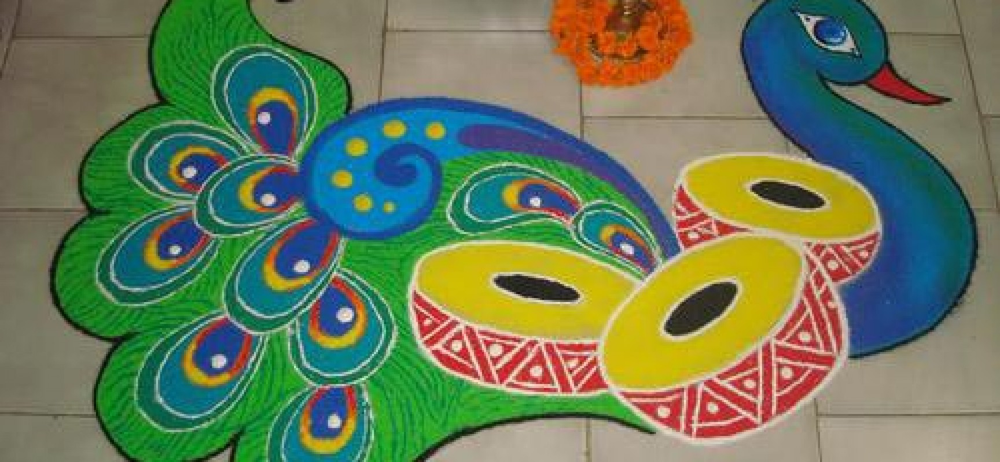

A country as diverse as India is symbolized by the plurality of its culture. India has one of the world’s largest collections of songs, music, dance, theatre, folk traditions, performing arts, rites, rituals, paintings and writings that are known, as the ‘Intangible Cultural Heritage’ (ICH). Indian Art and Culture is popular throughout the world.

Different forms of Indian Art and Culture:
Music
India has earned a special place in the world because of its musical repertoire. The basic notes of Svara came from – Sadja, Rishava, Gandhara, Madhyam, Panchama, Dhaivata, Nishata which denotes Sa, Re, Ga, Ma, Pa, Dha, Ni. There are two types of classical music:
1. Hindustani Music
- The dhrupad is the ancient form of Hindustani music.
- It demands efforts from the lungs and vocal chords.
- Raja Pan Singh Tomar played a significant role in the development of Dhrupad.
- Some major dhrupad gharanas are Dagarvani, Bishnupur, Darbhanga Mallik, etc.
- Gharanas are the music dialects that are created by the masters.
2. Carnatic/ Karnatak
- It demands efforts from vocals only.
- The three stages are ragam, tanam and pallavi.
- Kriti is the most popular form of Karnatak music.
Some famous personalities:
| Names |
Accomplishments |
| Amir Khusrow |
Musician at the court of
Alauddin Khilji |
| Bhimsen Joshi |
Famous classical singer &
Bharat Ratna awardee |
| G.N. Balasubramaniam |
Carnatic vocalist |
Musical Instruments
- Drums
- Trumpets
- Sankh
- Veena
- Tamboora
- Sarangi
- Dilruba
- Matki
- Jaltarang
- Indian Orchestra
Famous Personalities:
| Names |
Instruments
|
| Ali Akbar Khan, Amjad Ali Khan |
Sarod |
| Bismillah Khan |
Shehnai |
| Pt Hariprasad Chaurasia |
Flute |
| L. Subramaniam: |
Violin |
| Bundu Khan |
Sarangi |
| Srinivas |
Mandolin |
| P.Mani Iyer |
Mridangam |
| Ravi Sankar |
Sitar |
| Zakir Hussain |
Tabla |
Folk Songs and Culture
Folk songs are generally related to nature, love, familial relation, religious festivals, cultures etc.
- Kashmir – Sufi, Ghazal, Choral music
- Punjab – Bhangra (dance-oriented)
- Chhattisgarh – Bhartari Gayan (story of a king)
- West Bengal – Baul (songs of love)
- Madhya Pradesh – Aalha (a heroic ballad)
- Rajasthan – Folk music related with specific castes.
- Gujrat – Dandiya (dance-oriented folk music)
- Maharashtra – Owi (sung during leisure time)
- Goa – Suvari (sung during a wedding)
- Tamil Nadu – Naatupura Paatu.
- Bihar – Sohar (performed during childbirth).
- Assam – Zikir (teaching of Islam).
- Arunachal Pradesh – Ja-Jin-Ja (sung during marriages).
- Manipur – Khongjom Parva (musical narration of the battle of Khongjom).
INDI POP
– Fusion music
– Started by Hariharan & Leslie Lewis.
– 1999 an album released by AR Rahman with Micheal Jackson (named – Ekam Satyam)
Some Indi-Pop singers are – Alisha Chinai, Daler Mehendi, Euphoria Band etc.
If you know more about this topic that you think the article hasn’t included, then comment below. You can find details about other GK topics here:
 +91 9917078188
+91 9917078188 mohitpratap51@gmail.com
mohitpratap51@gmail.com www.IndianCulture.com
www.IndianCulture.com